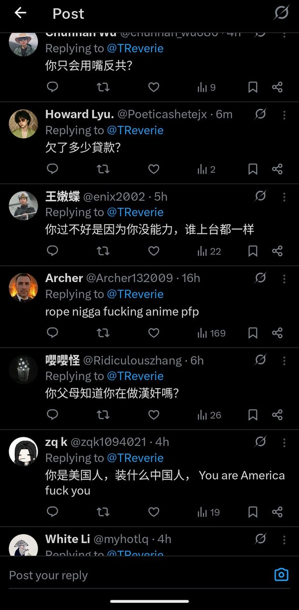

Warma广场
@Warma_Plaza
@TReverie (´･Д･)」

Tiny Reverie🇺🇸✝️
@TReverie
我本来都不想反共了，天天发反共帖要被累个半死。
一看自己评论区，有一大堆搞笑的中共国网军在无意义地破防骂人
谢谢你们这些在监狱里为我提供源源不断的反共动力的网军，我一定会一直反共直到中共垮台的那一天的
推翻共产党，才有新中国 https://t.co/tRmfOiePRC